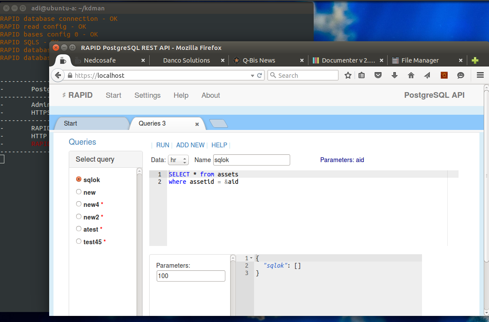
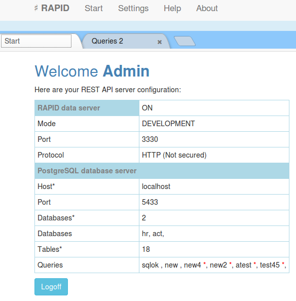
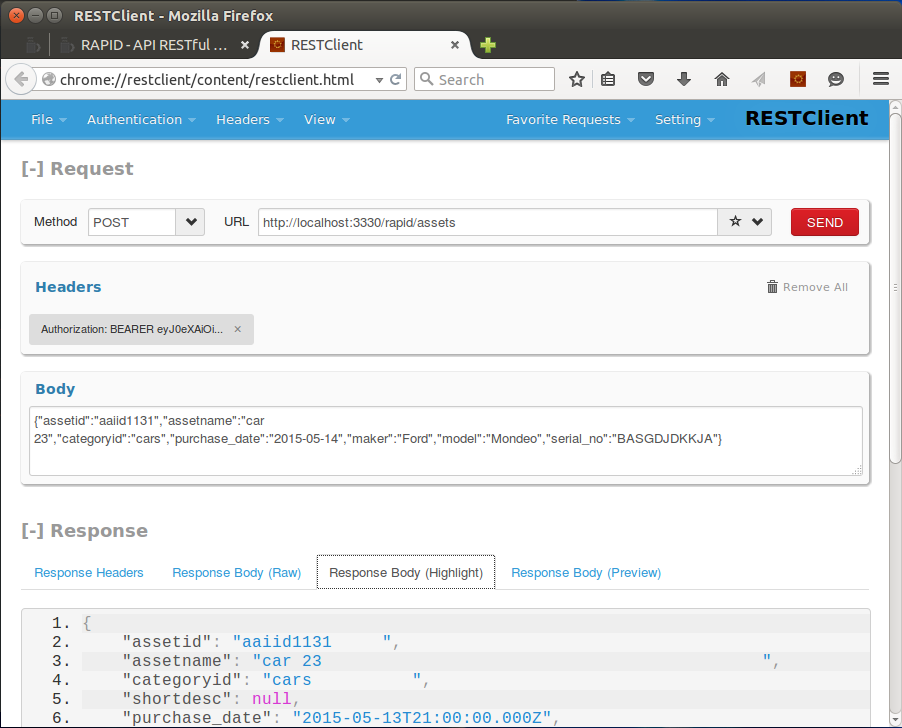

Automate all CRUD operations for your PostgreSQL databases.

Implements all CRUD operations (CREATE, READ, UPDATE, DELETE).
Automatically imports the database structure and create a metadata of your database.Single point access, accept POST/PUT/GET/DELETE http methods and respond with a JSON data object.
Basic operations can be used from the start:
The servers accepts batch of different commands at once and uses transactions by default.
Inject your code BEFORE and AFTER operations in order to customize access to each action.
Create queries and access them with simple GET commands.
Current version can be set to access data from one PostgreSQL server. If you need to access different PostgreSQL servers from a single point please check the enterprise version availability with support team at support@nedcosafe.com.
This RESTful API server can be used to offer WEB services for various kind of applications and devices over HTTP/HTTPS protocol like WEB, mobile or IoT applications that consumes WEB services.
One solution can scale by adding new API servers, the configuration can be shared within instances. To scale the solution a Load Balancing server is required and next just add or drop API instances to it.
License
The MIT License (MIT)
Copyright (c) 2015 Q-Bis Consult S.R.L.
Permission is hereby granted, free of charge, to any person obtaining a copy
of this software and associated documentation files (the "Software"), to deal
in the Software without restriction, including without limitation the rights
to use, copy, modify, merge, publish, distribute, sublicense, and/or sell
copies of the Software, and to permit persons to whom the Software is
furnished to do so, subject to the following conditions:
The above copyright notice and this permission notice shall be included in
all copies or substantial portions of the Software.
THE SOFTWARE IS PROVIDED "AS IS", WITHOUT WARRANTY OF ANY KIND, EXPRESS OR
IMPLIED, INCLUDING BUT NOT LIMITED TO THE WARRANTIES OF MERCHANTABILITY,
FITNESS FOR A PARTICULAR PURPOSE AND NONINFRINGEMENT. IN NO EVENT SHALL THE
AUTHORS OR COPYRIGHT HOLDERS BE LIABLE FOR ANY CLAIM, DAMAGES OR OTHER
LIABILITY, WHETHER IN AN ACTION OF CONTRACT, TORT OR OTHERWISE, ARISING FROM,
OUT OF OR IN CONNECTION WITH THE SOFTWARE OR THE USE OR OTHER DEALINGS IN
THE SOFTWARE.
About
Developed and maintained by:
Q-Bis Consult S.R.L.
www.qbis.ro
support@qbis.ro
NEDCO SAFE S.R.L.
www.nedcosafe.com
support@nedcosafe.com
DANCO S.R.L.
http://www.dancosolutions.net/
office@dancosolutions.net
Dependency
RAPID API is a NodeJS application based on Express server framework. It uses next modules:
RESTful API for PostgreSQL
Requirements:
- OpenSSL shuld be installed before in order to allow the server to create it's first self-signed SSL certificate.
- for Linux you will need to set your computer to accept Node opening lower ports (80/443 ...) without root access, next code works for Ubuntu
sudo apt-get install libcap2-bin
sudo setcap cap_net_bind_service=+ep /usr/local/bin/node
Unzip the server archive.
Run the server with:
The server can be managed at: https://<server Ip or domain name>
It will generate a self-signed SSL certificate at start until you will provide an authorized one.
If OpenSSL can not be found, you may need to provide a SSL certificate otherwise the server will not start.
Put the certificate into "ssl" folder as service.crt and service.key files. The SSL certificate is a PEM encoded crt file.
You can change the server port and protocol (HTTP/HTTPS) for API access from settings page.
Please check the SSL documentation page for more information.
See SETTINGS chapter for this server SSL setup after installation.
Server information page.
This page will display server status or required actions to setup the server.

Application server setup starts here.
Be sure that you can access your PostgreSQL database server by setting your firewalls and security rules to alow access from the aplication server computer/vpc. For Amazon RDS you will need to setup properly your database security group.
First action that comes with a fresh new server is to set its data access information. It is a short wizard that ask for your database connection credits. If the database is not found or can not be reached an error message is displayed.e
Database server:
In order to set access to a PostgreSQL server next information are required:
When used with Amazon RDS there are settings to be made on AWS console related to access security. Please check the AWS documentation.
All database server REST API configuration is stored in a database on the used PostgreSQL server (rcfg). By storing nothing important locally the system can scale simple adding new servers.
From settings page you can change administrator password or set an address for another PostgreSQL server.
System:
Administrator - set the administrator name and password
RAPID API - controll the RESful API server (set properties, start /stop).
TOKEN password - used for API authorization by default. The authorization method can be changed into RULES page at choice, code for JWT authorization is provided and samples for basic authorization.
SSL Certificate - set/view the used SSL certificate.
After some changes the server is restarted automatically to apply changes that require restart (SSL, port ...)
Security is one of most concerns in today world, dealing with databases over WEB is a potential security risk that need attention from the very start of your WEB application project.
RAPID servers uses HTTPS protocol for data communication and flexible authorization methods implementing JWT by default.
Authorization is based on "Authorization" header provided with each request, the server is a RESTful server and does not stores any user session. It is adviced to use JWT for API access, however the authorization method can be changed to any of your choice by modifing the AUTHORIZATION js file (rpdauth.js) using RULES page.
One SSL self-signed certificate is created when the server is started first time, it can be changed at any time using settings page.
ADMIN interface has one administrator only and it is protected by a basic authorization, in plus an IP filter list can be set to allow access to ADMIN module only from particular locations.
The server will open two ports, one for administration witch is 443 and one for API access. It is reccomended to use another port than 443 for API access as 443 port is generally more exposed to benign crawlers or malicious random attack.
If port 443 can't be opened ADMIN server will try 4430 port.
Use "IP filtering" in settings page to protect better the ADMIN interface.
https://en.wikipedia.org/wiki/Transport_Layer_Security
For a good security compliance in a production environment and to be sure that your REST API server will be accepted by all clients you will need to set a certified SSL certificate issued by an authorized CA (Certificate Authority).
SSL certificates can be issued for an IP or a Domain name, depending on your requirements you may chose from different CA providers.
OpenSSL can be used to create self signed SSL certificates or certificate requests. See next article for details.
https://www.digitalocean.com/community/tutorials/openssl-essentials-working-with-ssl-certificates-private-keys-and-csrs
At start the server will create automatically a self signed certificate to protect the administration pages. This certificate can be used safely at start as it is unique and good enough to protect most sensitive information.
In "development" mode, the REST API server can be used with HTTP unprotected protocol, however when the server is set in "production" mode a verified certificate is needed, otherwise the server can not be used as a cross origin resource for WEB applications and mobile applications based on WEBkit.
SSL certificate can be set in SETTINGS page. There will be needed a PEM encoded CRT file and it's private key. The private KEY should have no password protection.
JSON WEB TOKENS or JWT
A standard authorization method for WEB API's.
It uses the WEB request Authorization header to provide the token.
One token is an encrypted JSON. The emiter (authorization server) should have the same private key with the API service server, one that will check the token validity.
Tokens can have any required atributes, like USER, EMAIL, ID's, EXPIRE.
RAPID API server implements authorization by checking each request with the rpdauth.js auth function (see AUTHORIZATION page). The JWT Authorization token is decrypted and added to the client request as it is. By simple decrypting the token, the authorization is passed. Later any other rule can check the decrypted token object properties for application purposes like access rights, logs and any needed.
In BEFORE RULES can be used like:
"checkAll" BEFORE rule can be used to check if token is expired. This will aply to all requests.
Cross Origin Resource Sharring a default standard for a Service Oriented Arhitecture.
RAPID API is CORS enabled by default.
More detail related to CORS can be found at https://en.wikipedia.org/wiki/Cross-origin_resource_sharing.
An API server used as a cross origin resource always should use an verified SSL certifcate, otherwise the client web browser will not accept the connection at fist place.
It is not reccomended to open and use a REST API server without encryption (HTTPS protocol).
API
Create, Read, Update, Delete or CRUD reffers to basic operations on databases, in plus there are options to query the database and run a batch of operations at once in a transaction.
The server do not accept free SQL's via REST API as this can be a security issue, instead each SQL you may need should be declared as SQL statement and used via a REST command. The server uses JSON data format for requests and responses. Next are described HTTP commands that can be used with the REST API server.
All CRUD operations are ready to be used without additional settings after server configuration, however if you will need more it can be done with rules for each operation and table in your databases (before and after rules).
All requests should provide next headers, one token can be set using TOKENS page, please check JSON WEB Tokens page. Authorization method can be changed.
server_address: your server address including port like myserver.com:3330
CREATE
Insert a new record.
Request:
<server address>/rapid/<table>RAPID will add the primary key if not sent in request, the primary key is a standard GUID of … characters. RAPID check that each field in request belong to the table and each mandatory field in the table it is in the request (exception the PK that can be created if missing). After compliance the request is prepared and sent to the RDBMS as INSERT statement.
Sample CREATE (POST) request:
Path:
http://testserver.com/rapid/users
Request body:
{"username":"test1","firstname":"John","lastname":"Smith","email":"someone@aol.com"}
READ
Read a record by primary key.
FIND : Check for one record, it is enabled by default and no further actions are required to make it working.
QUERY : To return more data from the same table or from more tables, it needs preparations in form of a SQL statement saved into SQLS configuration table.
FIND
RAPID uses this to check if a record exist and return its data.
Request:
<server address>/rapid/<table>?<PK>=<key value>The response is the entire row in JSON format. If you will need to control further the response in order to not return some fields just set your rules into rpdafter.js for yourtableFind (SailsJs/js/rpdafter.js).
Without parameters (pky) will return a maximum of 1000 unsorted records from the table.
UPDATE
Same as CREATE, exceptions are:
Returns JSON
DELETE
Request:
<server address>/rapid/<table>?<PK>=<key value>Can be used to mark a record as deleted instead really delete. To do that you need to have one bolean field named ‘deleted’ into the table. (Please set your SQL Queries accordingly if you are using ‘deleted’ field mark)
The response is a JSON with DELETE command result not the deleted row. Functions for before and after actions can be set into rpdafter.js and rpdbefore.js (see next chapters for details)
QUERY
Allows you to run a SQL statement and return the response as JSON.
Queries can be set using the application "Queries" option from a new tab. Check also in page help.
Sample SQL:
RAPID uses ‘&’ wildcard here to mark a parameter, this conventions comes back from ODBC or ADO queries standard. The SQL statement should respect the RDBMS standards and syntax.
select users.firstname, users.lastname, users.email,
assets.assetname,assets.description
from assets inner join users on assets.uid = users.id
order by users.firstname
where assets.catid = &selcatid
Request:
<server address>/rapid/rpdquery?csql=<sqlname>&<par1>=<val1>&<par2>=<val2> ...Restrictions:
Sample request:
http://54.69.200.49:1337/rapid/rpdquery?csql=test&limit=50&offset=0
The result is in JSON format.
Queries
Implemented CRUD operations offers data access by default. An API server should nopt accept SQL requests from the client as it is not secure enough.
RAPID solves this by storing server side SQL statements that can be later accessed.
Use QUERIES page to manage queries list (write/test SQL's). Results are always sent in JSON format.
https://yourserveraddress:port/rapid/rpdquery?csql=nameofthesql&[par1=val1&par2=val2] ...&limit=0&offset=0 Sample front-end Angular request object:
CRUD batch operations
RAPID can be used to save (create,update,delete) more records from different tables even from different databases using one request. It can use two methods for its purpose, one that opens a transaction per database and the second one that threat each dataset row as an individual request and returns errors in case as a separate object into the response.
Request:
<server address>/rapid/up_data<server address>/rapid/up_tdataRequest body (JSON):
An object “data” of tables where each table is an array of row objects. Each row should have a property rpdstatus = -1,0,1,2
Add as many tables and row records as your system can load. It is useful to save documents like invoices, orders and any alike in one shot. This aproach where widely used by traditional client server desktop applications.
Sample:
{"data":{"attach":[
{"id":"a123","file":"max1","type":"txt","rpdstatus":1},
{"id":"b123","file":"max2","type":"txt","rpdstatus":2}
]
}
}
Response:
A JSON almost identical with the request, rpdstatus will be set to 0 for solved records and 9 if an error where encountered (up_data path), for each error a descriptive row is added to the response dataset. If the request was sent to be transactional (up_tdata path) in case of any error the error is returned and the traqnsaction is rooled back, these hapens even we are using tables from more than one database within the same dataset.
We recommend Firefox and Firefox RestClient for direct testing.
Next image present an Create request with Firefox RestClient:
CREATE uses POST method and a JSON key values object parameters body of fields and values to insert.
You will need a token in order to set properly the authorization header (use Headers and Authorization / token). Headers can be saved for later use, same for requests.
Create will return created record as OK result. Useful when you do not send an ID rather retreive one from the server.
The server always add an unique UUID if one is not provided.

RULES for CRUD operations
Rules editor offers javascript syntax checkings and final validation before overwrite one of the server js files.
Before rules reffers to functions that can be set to run before an CRUD operation of RESTful API.
CRUD operations are based on client REQUEST, depending on the request type there each request comes with parameters or atributes. Before rules are in place to check or alter the request parameters to provide a better option for your application API.
Before rules are implemented as module from "rpdbefore.js" file found on "js" folder of your server root. When is edited it is copied to "js/work" folder and saved only after it is checked against gross errors that can stop the start process of your server.
Function naming rule is simple, the function name is formed by table name (lowercase) and action name propper case (Create, Find, Update, Delete).
Function parameters:
Sample:
module.export = {
...
usersCreate: function(req,atr,next){
atr.id = myfunction(); // create custom ID
if (!atr.email){return next({error:"email required"});
next()
},
...
}
The checkAll before rule runs on top of all requests if it is set (found in module).
After rules reffers to functions that can be set to run after a CRUD application of RESTful API. It is useful to check and change the request result. Same model as "BEFORE" rules.